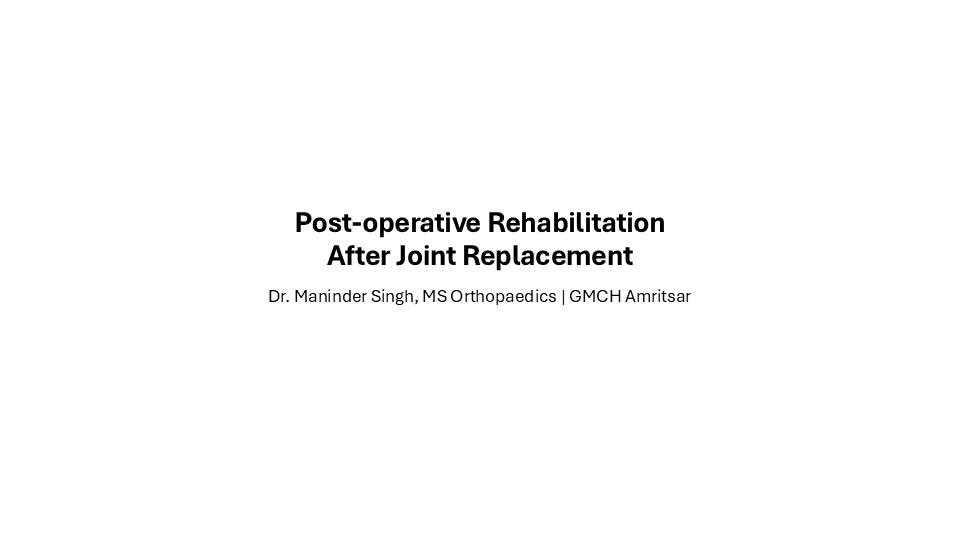
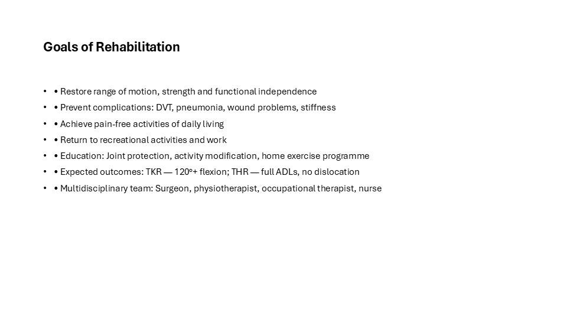
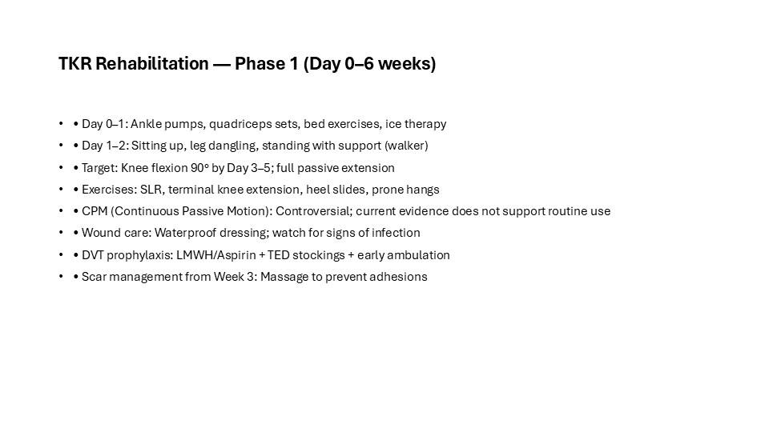
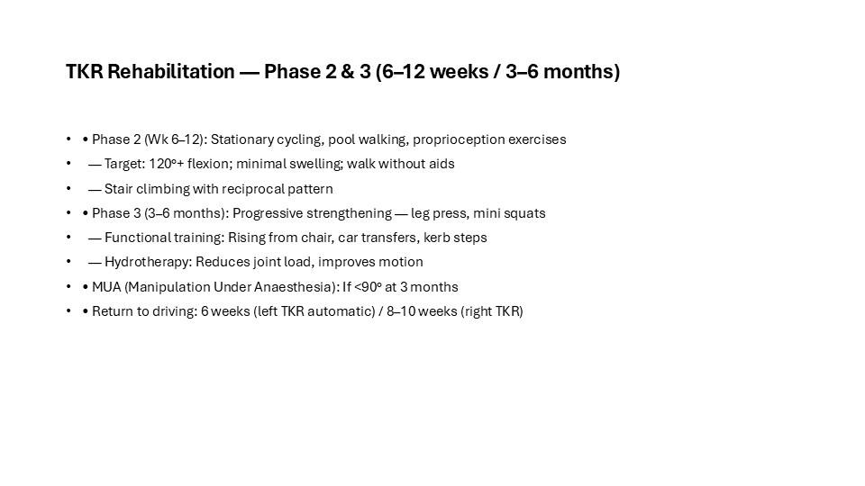
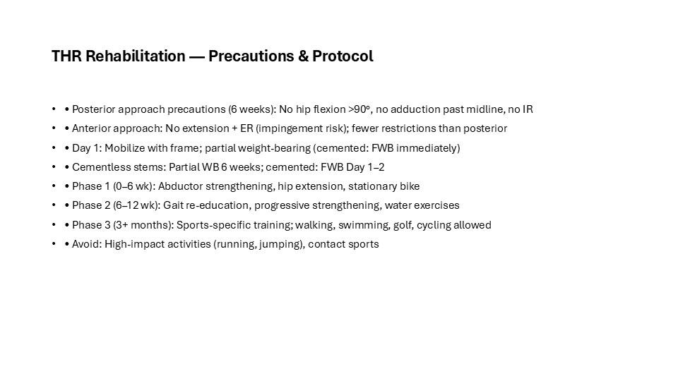
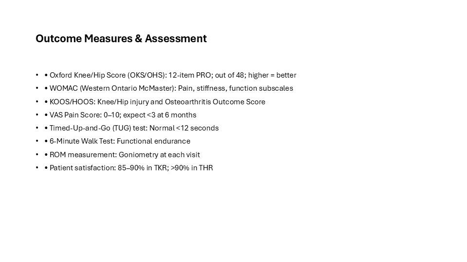
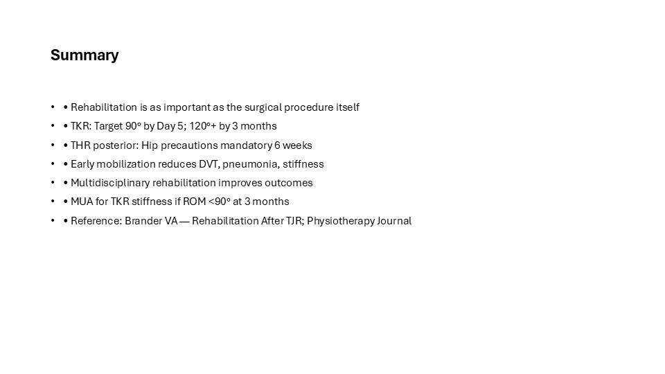

This is the full illustrated version of a teaching presentation prepared by Dr. Maninder Singh (GMCH Amritsar). Every slide is shown below with its text, so you can read it like an article — or download the original PowerPoint (.pptx) to teach from it. Topics covered include: Goals of Rehabilitation; TKR Rehabilitation — Phase 1 (Day 0–6 weeks); TKR Rehabilitation — Phase 2 & 3 (6–12 weeks / 3–6 months); THR Rehabilitation — Precautions & Protocol; Outcome Measures & Assessment; Summary.
Contents — jump to a slide (7)

Post-operative Rehabilitation After Joint Replacement
Dr. Maninder Singh, MS Orthopaedics | GMCH Amritsar

Goals of Rehabilitation
- • Restore range of motion, strength and functional independence
- • Prevent complications: DVT, pneumonia, wound problems, stiffness
- • Achieve pain-free activities of daily living
- • Return to recreational activities and work
- • Education: Joint protection, activity modification, home exercise programme
- • Expected outcomes: TKR — 120°+ flexion; THR — full ADLs, no dislocation
- • Multidisciplinary team: Surgeon, physiotherapist, occupational therapist, nurse

TKR Rehabilitation — Phase 1 (Day 0–6 weeks)
- • Day 0–1: Ankle pumps, quadriceps sets, bed exercises, ice therapy
- • Day 1–2: Sitting up, leg dangling, standing with support (walker)
- • Target: Knee flexion 90° by Day 3–5; full passive extension
- • Exercises: SLR, terminal knee extension, heel slides, prone hangs
- • CPM (Continuous Passive Motion): Controversial; current evidence does not support routine use
- • Wound care: Waterproof dressing; watch for signs of infection
- • DVT prophylaxis: LMWH/Aspirin + TED stockings + early ambulation
- • Scar management from Week 3: Massage to prevent adhesions

TKR Rehabilitation — Phase 2 & 3 (6–12 weeks / 3–6 months)
- • Phase 2 (Wk 6–12): Stationary cycling, pool walking, proprioception exercises
- — Target: 120°+ flexion; minimal swelling; walk without aids
- — Stair climbing with reciprocal pattern
- • Phase 3 (3–6 months): Progressive strengthening — leg press, mini squats
- — Functional training: Rising from chair, car transfers, kerb steps
- — Hydrotherapy: Reduces joint load, improves motion
- • MUA (Manipulation Under Anaesthesia): If <90° at 3 months
- • Return to driving: 6 weeks (left TKR automatic) / 8–10 weeks (right TKR)

THR Rehabilitation — Precautions & Protocol
- • Posterior approach precautions (6 weeks): No hip flexion >90°, no adduction past midline, no IR
- • Anterior approach: No extension + ER (impingement risk); fewer restrictions than posterior
- • Day 1: Mobilize with frame; partial weight-bearing (cemented: FWB immediately)
- • Cementless stems: Partial WB 6 weeks; cemented: FWB Day 1–2
- • Phase 1 (0–6 wk): Abductor strengthening, hip extension, stationary bike
- • Phase 2 (6–12 wk): Gait re-education, progressive strengthening, water exercises
- • Phase 3 (3+ months): Sports-specific training; walking, swimming, golf, cycling allowed
- • Avoid: High-impact activities (running, jumping), contact sports

Outcome Measures & Assessment
- • Oxford Knee/Hip Score (OKS/OHS): 12-item PRO; out of 48; higher = better
- • WOMAC (Western Ontario McMaster): Pain, stiffness, function subscales
- • KOOS/HOOS: Knee/Hip injury and Osteoarthritis Outcome Score
- • VAS Pain Score: 0–10; expect <3 at 6 months
- • Timed-Up-and-Go (TUG) test: Normal <12 seconds
- • 6-Minute Walk Test: Functional endurance
- • ROM measurement: Goniometry at each visit
- • Patient satisfaction: 85–90% in TKR; >90% in THR

Summary
- • Rehabilitation is as important as the surgical procedure itself
- • TKR: Target 90° by Day 5; 120°+ by 3 months
- • THR posterior: Hip precautions mandatory 6 weeks
- • Early mobilization reduces DVT, pneumonia, stiffness
- • Multidisciplinary rehabilitation improves outcomes
- • MUA for TKR stiffness if ROM <90° at 3 months
- • Reference: Brander VA — Rehabilitation After TJR; Physiotherapy Journal
Use this deck in your teaching
The original editable PowerPoint is free to download for non-commercial teaching, with credit to the author. Questions or corrections? Contact us.
About this deck
Prepared by Dr. Maninder Singh (MS Orthopaedics, Associate Professor, GMCH Amritsar) for postgraduate and clinical teaching. Where images are from open-licence sources (for example Wikimedia Commons), the licence and author appear on the slide. See our editorial policy. Educational use only — not medical advice; see Terms & Medical Disclaimer.